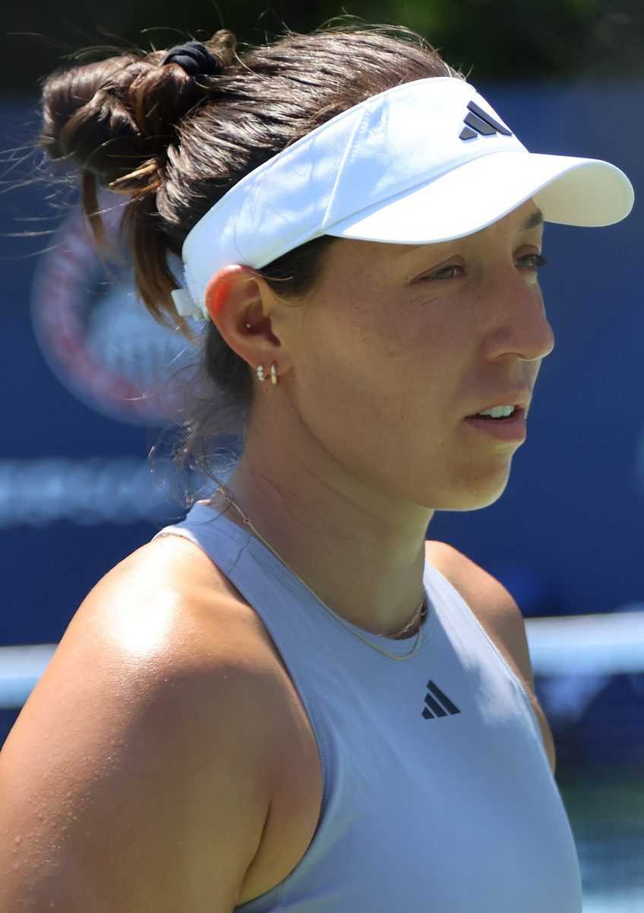

挽救赛点险胜诺斯科娃，佩古拉挺进WTA年终总决赛四强
美国老将在局势跌宕起伏的鏖战中化解赛点，力压高芙晋级，半决赛将迎战米拉·安德烈娃。

战况回顾
周四，杰西卡·佩古拉（Jessica Pegula）在WTA年终总决赛中上演惊险好戏，她挽救了一个赛点，以7-6 (7-2)、4-6、7-5力克温网冠军琳达·诺斯科娃（Linda Noskova），锁定一个四强席位。在此之前，高芙已经击败了玛尔塔·科斯秋克，这意味着佩古拉唯有取胜才能将晋级悬念延续。这场在加州沙漠进行的对决长达2小时45分钟，美国老将展现出了钢铁般的意志，最终在三人同为2胜1负的小组赛后，凭借净胜盘优势将高芙挤出局。
焦点所在

小组赛战罢，诺斯科娃、佩古拉和高芙的战绩同为2胜1负，只能通过计算净胜盘来决定出线归属。诺斯科娃以5胜2负的盘分高居小组头名，佩古拉则以5胜3负惊险以小组第二晋级，高芙4胜3负遗憾出局。戏剧性的结局也为接下来的半决赛埋下了伏笔——佩古拉将对阵法网冠军米拉·安德烈娃（Mirra Andreeva）。
关键数据
本场比赛中，佩古拉轰出了职业生涯单场新高的16记ACE球，这也是她WTA巡回赛历史上单场发球直接得分纪录的巅峰。面对诺斯科娃在决胜盘凶猛的破发以及第5局（5-4时）的赛点，她顶住压力完成了逆转。相比之下，诺斯科娃的发球状态起伏不定，全场送出15个双误，仅有9记ACE。本届总决赛在移师印第安维尔斯后举办（注：原定利雅得）。而在早些时候的比赛中，世界排名第四的高芙克服了腰部伤势，并在第二盘1-5落后的绝境下上演大翻盘，以6-4、7-5击败替补出战的科斯秋克。由于 Елена Рыбаkina（叶莲娜·莱巴金娜）退赛，带伤作战的科斯秋克最终以0胜3负结束了本次总决赛之旅。
下一步看点

诺斯科娃将在周六的半决赛中对阵埃莉娜·斯维托丽娜（Elina Svitolina）与阿瑞娜·萨巴伦卡（Aryna Sabalenka）之间的胜者。而佩古拉则将与米拉·安德烈娃交手。